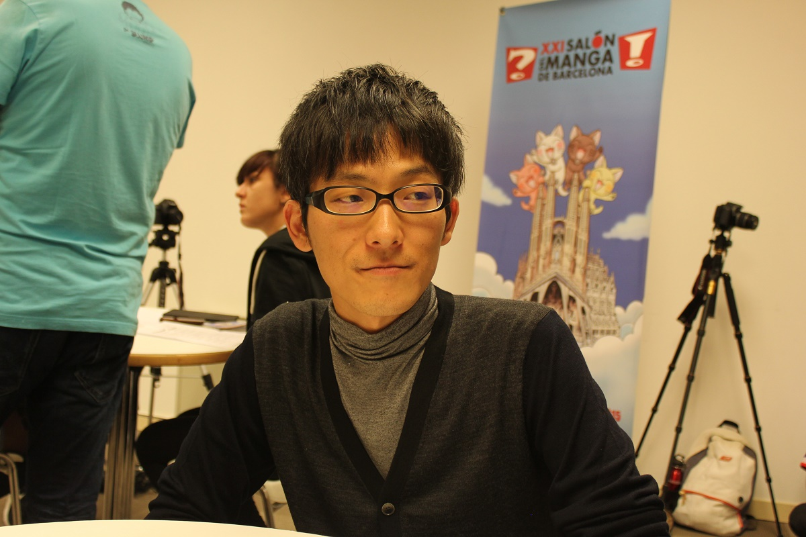

About Akame Ga Kill!

"Akame ga Kill!" is an anime that aired from 2014-2015 that follows the story of Tatsumi, a clueless peasant that embarks on a journey to the capital to earn money to save his rural village. He soon realized the corrupt nature of the capital and the very foundations of the empire he lives in when he discovered that the emperor is only a child, manipulated by a corrupt minister. After witnessing the death of his friends at the hands of twisted nobles, he is recruited by a group of Assassins known as "Night Raid," who are affiliated with the revolutionary army and fight to overthrow the wicked empire.
This fictional world is inspired by real world events and concepts, but has supernatural elements as well. Imperial Arms are powerful weapons created 1000 years ago by the first emperor of this empire, crafted from the remains of mythical Danger Beasts and capable of superhuman feats. Every member of Night Raid has an Imperial Arm, making them the backbone of the resistance against the empire.
The empire, of course, is also in possession of many of these Imperial Arms as well. Existing as a militaristic state, the empire additionally quarrels with tribes in all directions as it attempts to conquer and expand. They use the strength of their forces as justification for their rule and do as they please. The minister acts as a shadow-leader of sorts, using the impressionable emperor to act out on his most depraved and inhumane desires. This corruption has plagued this regime for decades at this point; the people are fed up with this cruelty and abuse, and look to a rebellion to free them from this hell.
Although there are fictional elements of this series, there are many real-world ideas at play, and an uncanny resemblance to certain historical events of Chinese civilization. The concepts of empires, ministers, wars, rebellions, hierarchy, bureaucracy, control, corruption, and so much more connect "Akame ga Kill!" to Chinese history. Although certain elements and stylistic choices of the series are also inspired by cultures from other countries—including Japan, Rome, and Germany — the political system of the Empire is heavily inspired by Chinese history.
Concepts of the Political System

Child Emperor and Minister
Rebellion and Corruption
Centralization and Bureaucracy
Visuals
Conclusion

The political structure of the Empire in "Akame Ga Kill!" closely reflects patterns that appeared throughout Chinese history. The presence of a child emperor manipulated by a powerful minister, widespread corruption that fuels rebellion, and a highly centralized government maintained through bureaucracy are all elements that shaped the rise and fall of many Chinese dynasties. While the series is ultimately a fictional story, the similarities express the influence of real historical systems.
Although there are influences from the characteristics of several different countries, such as Japan, Rome, and Germany, the plot and political system is primarily inspired by historical events in China. From both speculation and confirmation from the creator, many characters, events, and the overall political system derive from direct inspiration by Chinese dynasties. The mixing and mashing of characteristics of multiple countries does not dilute the impact that China had on the series.
By examining these parallels, it becomes clear that many of the conflicts within the Empire mirror historical struggles over authority, legitimacy, and governance in China. The manipulation of young rulers, the abuse of bureaucratic power, and the rise of rebellion against corrupt leadership were recurring themes in Chinese history. As a result, the world of "Akame ga Kill!" deeply reminds me of the content of HIST 80 with Professor Y. Zuo.
These connections demonstrate how historical ideas continue to shape modern storytelling. It is fascinating that even in fictional worlds far different than reality, history can be mirrored and play a large role in the world-building.